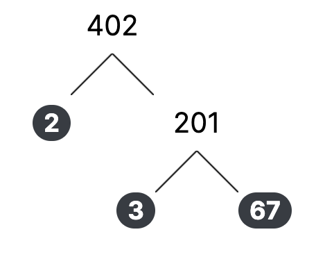
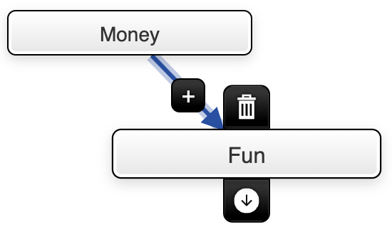
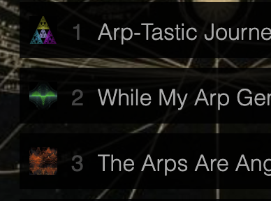
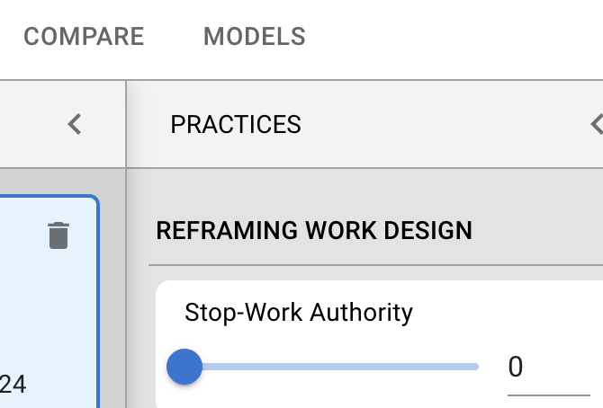
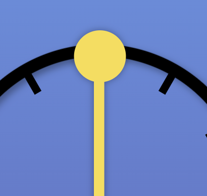

Jonathan Elbom
Crafted UX
Expertise in the design and implementation of Interaction, Motion, and UI/UX
-
DotzA retro smash the dots game and an exercise in vanilla js. It's best on your phone
-

FactorTHATOnce I built a factoring tree in Actionscript. Now I built a factoring tree in Javascript.
-

Mental ModelerA fuzzy logic cognitive mapping web app I built with my prof buddy.
-

Friday Night JamzWe jammed on fridays so I archived it.
-

PSU FocosI did UX consulting and some interface prototyping for Portland State University.
-

Countdown TimerThis was a UX demo to design and build a countdown timer.
-
SearchMotion and interaction demo for doggie search experience.
This is a collection of side projects that reside in my GitHub repo.